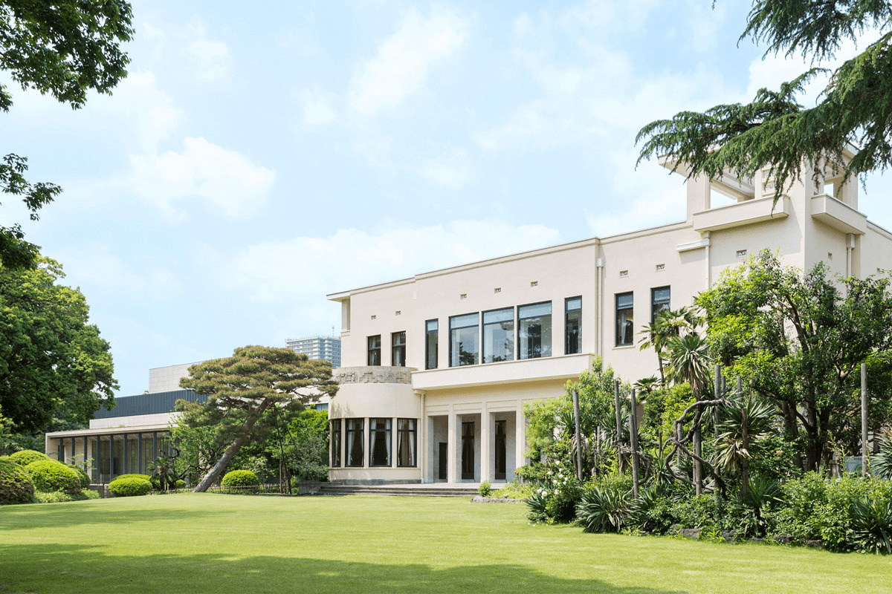
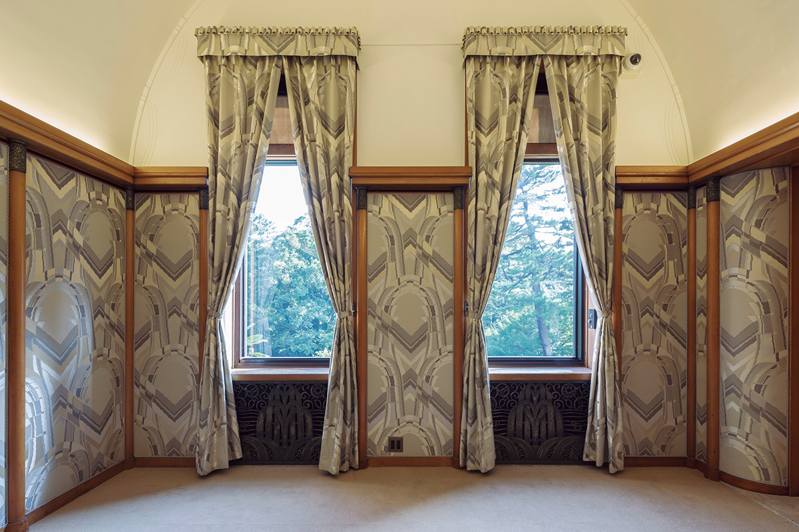
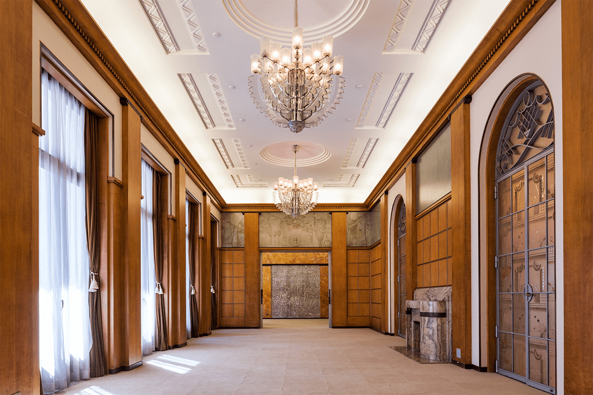
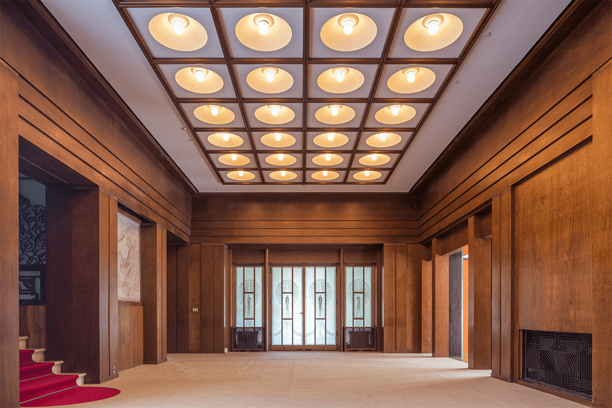
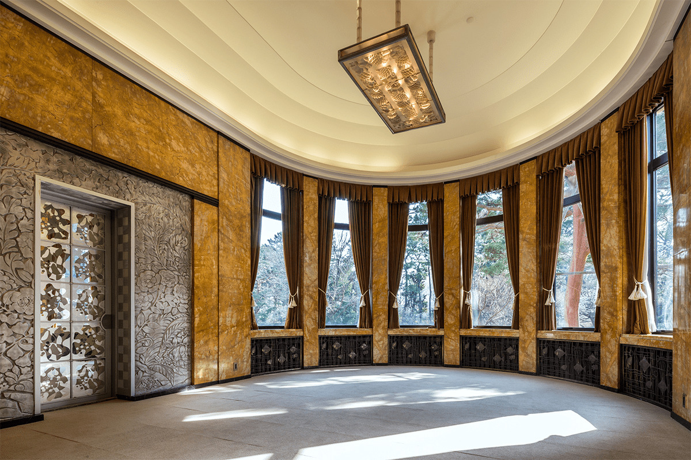
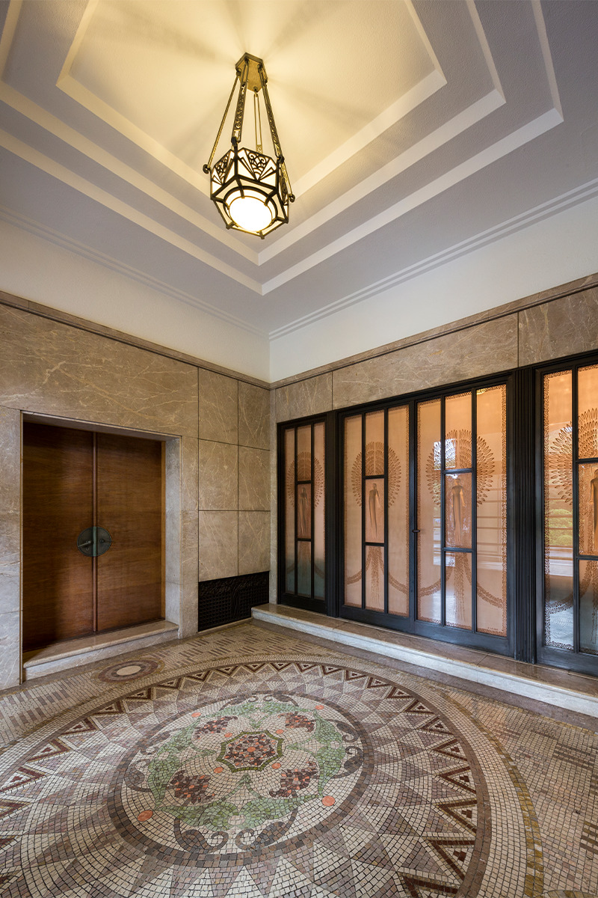
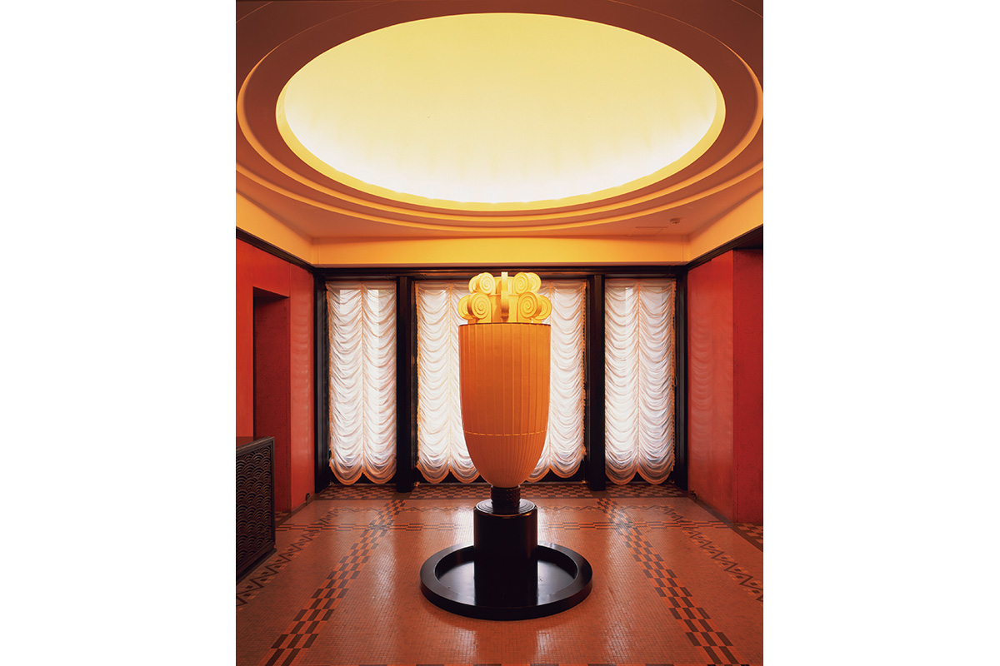

Токио · Сироканэдай · музей
Музей сада Тэйэн: особняк принца в стиле ар-деко, ставший музеем

В Токио много музеев, и в некоторые идут не только ради выставок, но и ради самих зданий. Музей сада Тэйэн как раз такой: он занимает особняк принца 1930-х годов, где почти без изменений сохранилось убранство эпохи ар-деко.
История
Особняк принца, открытый для всех
Здание построили в 1933 году как резиденцию принца Асаки, члена одной из ветвей императорской семьи. Стиль выбрали самый модный для тех лет: ар-деко. В 1983 году особняк открылся как художественный музей, и облик того времени в нём сохранён почти без изменений. В 2015 году главное здание, чайный домик и главные ворота признали важной культурной ценностью Японии.

В 2014 году музей прошёл большое обновление. В гостиной принца восстановили обои, фасад заново покрасили, а «Башню ароматов» Анри Рапена основательно отреставрировали. Тогда же появилось новое здание с белыми выставочными залами. Старый особняк и новый корпус музей использует вместе, поэтому здесь показывают не только классическое искусство, но и современное, видео, музыку и перформансы.
Залы
Ар-деко в каждой детали
Больше всего ар-деко собрано в двух соседних залах на южной стороне, которые выходят на террасу у сада: в большой гостиной и большой столовой. Колонны с ионическими капителями отделаны деревом сикомора, а на потолке вокруг люстры идут штукатурные круги и гипсовый узор зигзагом.

Совсем другое настроение в большом холле. Стены обшиты орехом, украшений немного, и зал выглядит строгим и солидным. На потолке в решётке из рёбер расположены 40 светильников в форме полусфер, а зеркало между арками и мраморный камин напротив входа поставлены строго симметрично.

Большая столовая смотрит на сад огромным полукруглым эркером, и комната от этого кажется светлой и просторной. От большой гостиной её можно отделить раздвижными дверями с гравированным стеклом. Здесь принимали гостей за обедом, поэтому главный мотив зала это фрукты: они есть на светильниках Рене Лалика «Ананасы и гранаты» и на стеклянных дверях. А на решётках батарей изображены рыбы и раковины.

Шедевры
Стекло Лалика и «Башня ароматов»
Гостей встречает уже парадный вход. Стеклянные двери с рельефом сделал Рене Лалик (1860–1945), французский мастер стекла и ювелир, один из главных художников ар-деко. Он придумал их специально для этого особняка. Фигуры женщин с раскрытыми крыльями отлиты в форме из прессованного стекла. Это единственный экземпляр, и двери такого размера редкость даже среди работ Лалика. Мозаику на полу сложили из мелких кусочков натурального камня по рисунку техника строительного отдела министерства императорского двора.

Ещё одна гордость музея это «Башня ароматов», комнатный фонтан, который в 1932 году придумал французский художник-декоратор Анри Рапен (1873–1942). Башня устроена так, что по ней течёт вода. Говорят, когда здесь жила семья принца, на светильник наверху капали духи, и от тепла лампы аромат расходился по комнатам.

Для тех, кто хочет разглядеть особняк подробно, у музея есть бесплатное приложение для iOS и Android. Оно рассказывает о бывшей резиденции принца Асаки до мелочей, и в 2021 году в нём был аудиогид на шести языках. Устройства и наушники в музее тогда давали бесплатно.
Музей сада Тэйэн
- Адрес
- Токио, Минато, Сироканэдай, 5-21-9
- Телефон
- +81 50-5541-8600
- Часы работы
- 10:00–18:00, вход до 17:30
- Выходные
- понедельник (если праздник, то вторник)
- Цены / Вход
- зависит от выставки
- Как добраться
- от станции Мэгуро (JR Яманотэ, восточный выход; Токю Мэгуро, главный выход) 7 минут пешком; от станции Сироканэдай (метро Тоэй Мита и Намбоку), выход 1, 6 минут пешком
Фото: Музей сада Тэйэн.